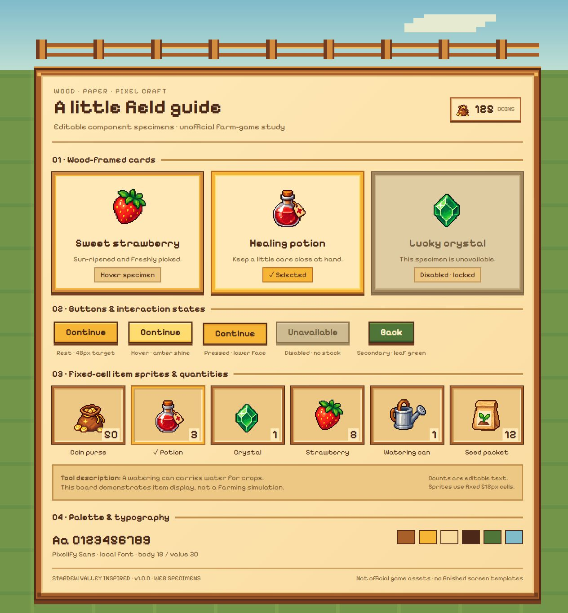
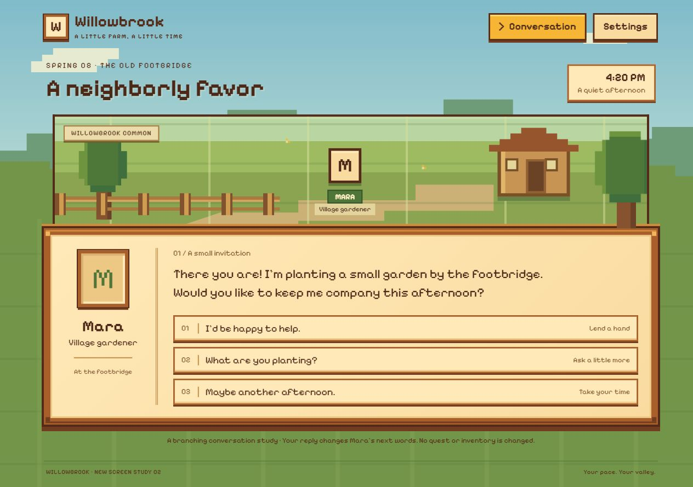
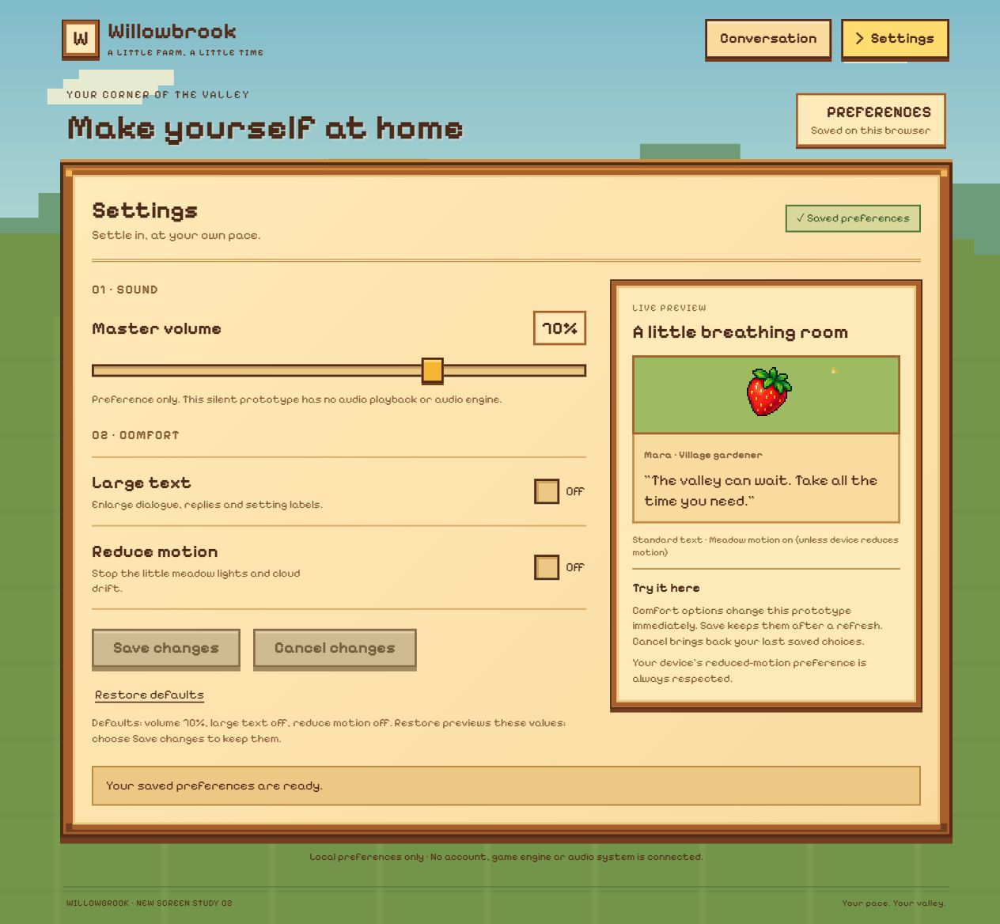

Game UI
Game UISTARDEW VALLEY-INSPIRED · REFERENCE SKILL · V1.0.0
星露谷风格，
延伸到五个界面。
温暖木框、清晰像素与乡间日常物品。
原三屏继续保留，新增对话与设置测试。
本地实验版 · Web 可交互样例 · 非官方风格研究

包内组件样品 打开查看 ↗01 / AI OUTPUT
奖励、背包、商店，共用一套视觉规则。
这一组三屏由独立 AI 使用参考 Skill 制作。下方展示浏览器实际渲染截图，点击进入对应交互界面；使用过程和验证范围见本页底部记录。
RUN 02 / NEW SCREEN TYPES
同一套原包，再做对话与设置。
未参与旧制作的 AI 沿用未改动的 v1.0.0 包，根据新需求制作这两屏，没有获得成品页面。这是同模型新代理的一轮测试，具体操作与限制见下方报告。

04 / DIALOGUE · RUN 02
对话 ↗
查看新类型的对话界面与交互。

05 / SETTINGS · RUN 02
设置 ↗
查看新类型的设置界面与交互。
新增示例不改变原三屏与 Skill 包；下载仍为原 v1.0.0。界面展示不代表跨模型稳定性验证。
02 / WHAT YOUR AI READS
从参考方向，到可复用的界面语言。


03 / TRY WITH YOUR AGENT
把参考包，交给你的 AI。
下载解压后保留目录结构。让 AI 先读取本地 SKILL.md、关联规则和参考图，再提出你的界面需求。也可以放入你的 Agent 支持的 Skills 目录中使用。
阅读 SKILL.md ↗一个可以直接改用的需求
使用 stardew-valley-ui Skill。先读取 SKILL.md 和关联规则，并查看参考图、组件板、物品图集。 为我的游戏制作背包界面：12 个格子、分类、物品详情、使用药水。使用 HTML/CSS/JS，复用包内风格与素材，文字和数值可以修改。完成后实际渲染并检查。
04 / VERIFICATION
看得到的结果，也有明确的边界。
本轮实验的材料、AI 使用过程与浏览器检查记录分开保留。具体检查结果和限制请阅读验证记录。
这是实验性本地 Web 参考工作流。尚未验证跨模型稳定性、游戏引擎导出或 Figma 编辑文件。参考图与物品图集由 AI 生成；未包含官方游戏资产。字体及其许可证见包内文件。